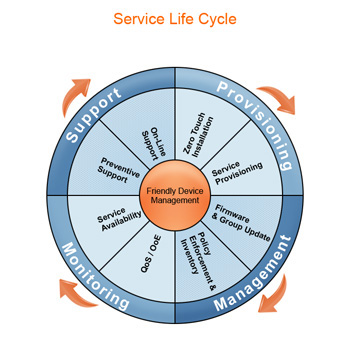

ACS and TR-069 Management Console
Seamless Management of Data, Voice, and Video Services Friendly's Management Console offers a unified platform for remote management of CPEs, such as modem/routers, IPTV/ STBs, ATA/VoIP, storage devices, media centers, Femtocell, IP-phones, cameras, etc. The management console offers a single interface to manage the ACS and automate the deployment and support of data, voice and video services, thereby reducing operation and support costs, while enhancing customer satisfaction. Its user-friendly interface covers the entire service lifecycle, from centralized remote provisioning of services, to inventory management, group updates, monitoring, event triggering, and support automation.

Shortening time to market for new devices Adding new devices is a daunting task for service providers. Thanks to its unique "Smart Layer" technology, Friendly eliminates the need for costly development and integration efforts when adding new device types. This feature dramatically reduces the Total Cost of Ownership (TCO) by eliminating the need to study in-depth device management protocol, develop complicated scripts, and integrate to OSS and other systems. All the various devices are centrally managed through the management console.
Management of additional devices (behind a NAT-via TR-111) In addition to the subscriber's gateway, the Management Console can manage multiple devices from a single user, such as: VoIP device, IP-Phones, STBs, media centers, storage devices, cameras, and any other TR-111 supported CPE, even when they are located behind a NAT.
Remote Update of a Specific Device The Management Console enables diagnostics and configuration of a specific CPE device. The system can manage the entire data model of the CPEs, reboot the device or reset to factory default, upload or download configuration files for backup/restore purposes, and resolve user's problems easily and efficiently.
Mass Update / CPE Group Update The Management Platform enables remote configuration of a group of devices (mass update). The update may include parameter values, configuration or firmware files, and can be sent to:
CPEs of a specific CPE model type Customer-defined groups of CPEs A list of specific devices imported from an external file The update can be performed immediately, or scheduled for a certain time and date. The customer can also control the frequency and quantity of updates to reduce ACS server load.
Software/Firmware Image Management The system enables downloading of CPE software/firmware image files. The protocol provides mechanisms for version identification, file download initiation (ACS-initiated downloads), and notification of the ACS of the success or failure of a file download. The update of firmware can be sent to a single CPE or a group of CPEs. For security purposes, the file can be digitally signed. This signed package format ensures the integrity of downloaded files, and prevents third parties from remotely configuring the device.
CPE Policy Management The Management Console enables policy management and enforcement. The following policies can be defined and enforced:
- Communication time intervals: the time interval during which the CPE must notify the ACS and search for updates (Inform Time Interval)
- Polling: the parameter values that the CPE must inform periodically (polling), such as: QoS parameters, bytes sent/received, etc.
- User Updates: whether the CPE should inform the ACS immediately or during the next scheduled Inform if the user changed a value (such as SIP server name).
- Blocking: blocking the user from changing specific parameter values.
Supports the Full Set of TR-069 Protocols
- TR-069 Amendment I & II
- TR-098 for QoS
- TR-104 for VoIP Gateways & ATAs
- TR-106 for digital home devices
- TR-110 for VoIP configurations
- TR-111 for LAN/NAT devices
- TR-135 for STB/Video
- TR-140 for Network Storage
- TR-142 for PON devices
- TR-156 for GPON access
- TR-196 for Femto access
Comprehensive Reports
The management console offers seamless generation of comprehensive reports on all the activities. All reports can be generated from the ACS database via the management console or via integration with external platforms such as "Business Object".
- Management of single and multiple CPEs per user
- CPE and customer profile management
- Users managment
- Mass Update / CPE Group Update
- Software/Firmware Image Management
- CPE Policy Management
- CPE based events triggering
- Supported of devices connected to the router (TR-111)
- Full support of the TR-69 specs
- Complete API/NBI to external applications
- Enables provisioning and delivery of value-added services
- Supports all routers, set-top boxes (STBs), ATAs, cameras, IP phones with no additional development
- Improve subscriber's QoS
- Reduces the cost of provisioning new subscribers and new services
- Reduces on-going support costs